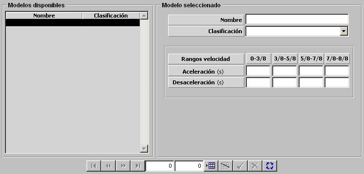

Aceleración y Giro de Terrestres

Los modelos de Aceleración y Giro de Terrestres se parametrizan mediante una tabla en la que se introducen los valores de Aceleración y Desaceleración para los siguientes rangos de velocidad de la unidad, expresados en fracciones de la velocidad máxima de la unidad:
0 – 3/8, 3/8 – 5/8, 5/8 – 7/8, 7/8 – 1
Descripción de los parámetros:
Aceleración: Tiempo que tarda la unidad en aplicar cada incremento de velocidad, según la tabla. La suma de los tiempos de una fila completa, coincide con el tiempo que tardaría la unidad en pasar de velocidad cero a su máxima velocidad.
Unidades: segundos
Rango: 0 - 9999.9
Ejemplo:
Si Aceleración = 0 ⇒ aceleración infinita.
Si Aceleración = 9999.9 ⇒ mínima aceleración.
Desaceleración: Tiempo que tarda la unidad en aplicar cada decremento de velocidad, según la tabla. La suma de los tiempos de una fila completa, coincide con el tiempo que tardaría la unidad en pasar de su máxima velocidad a velocidad cero.
Unidades: segundos
Rango: 0 - 9999.9
Ejemplo:
Si Desaceleración = 0 ⇒ desaceleración infinita.
Si Desaceleración = 9999.9 ⇒ mínima desaceleración.